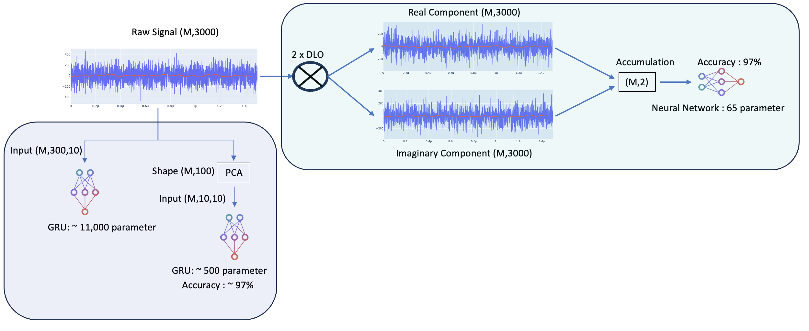
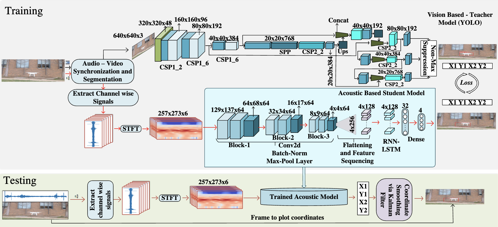
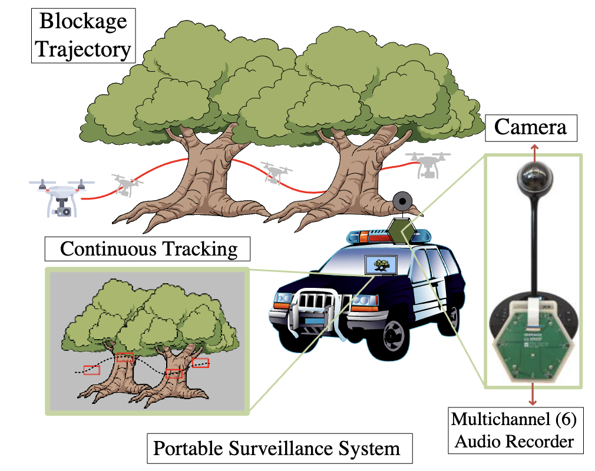
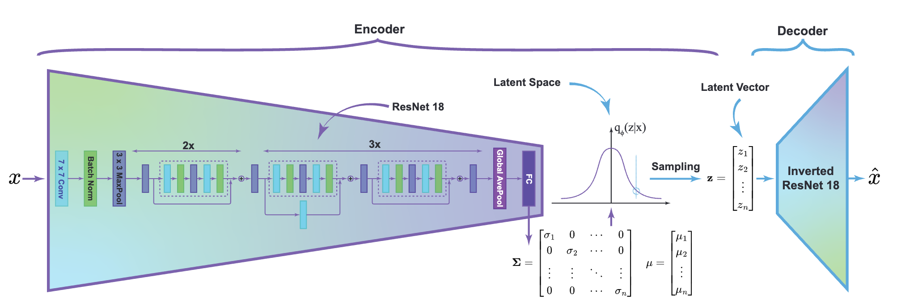
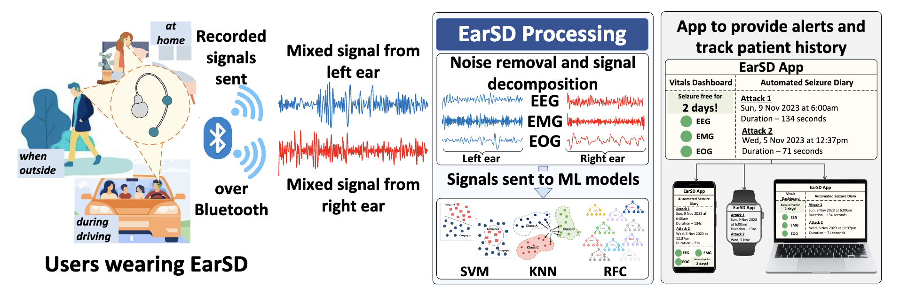

|
Neel Vora I'm a computer science graduate pursuing Master's degree. I bring over three years of experince in field of applied machine learning and software engineering. Currently I am machine learning intern at Lawerence Berkeley National Laboratory in Berkeley, where I work on optimizing quantum qubit readout through signal processing and noise reduction techniques. I am currently working on my thesis under the guidance of Dr. VP Nguyen specializing in the field of machine learning on edge devices. Email / Resume / Github / LinkedIn / Scholar Looking for full-time opportunities in MLE or SDE roles! |
Highlighted WorksI'm interested in computer vision, machine learning, image and signal processing processing, edge computing. Most of my work is about development and deployment of end-to-end machine learning pipeline either on edge device or cloud servers. |
|  |
FPGA-Accelerated Machine Learning for Rapid Quantum Qubit Readout
This project swiftly classified quantum qubit states using ML algorithms. Raw voltage signals from a cryogenically stored quantum chip were processed, and noise removal and dimension reduction were performed. The ML algorithms, along with a data-driven digital local oscillator, enabled high-fidelity classification—all implemented on FPGAs, completing the process in just 2µs. |
|  |
Multimodal UAV Detection and Tracking System
This project addresses limitations in camera-based tracking systems by implementing a multi-modal approach, combining both acoustic and vision tracking. Leveraging student-teacher learning, the acoustic model was trained from the pre-trained vision model. The integration of a cross-attention mechanism maximized the advantages of both modalities. The project demonstrates the efficacy of this approach in UAV detection and tracking. Implemented on the ARM Cortex A72, the system ensures lightweight and real-time inference for practical applications. |

|
EMG Signal Compression for Epileptic Seizure Detection with Variational Auto-Encoder
This project focuses on extracting valuable information from physiological signals and compressing their size. Utilizing a variational auto-encoder, traditionally employed for images, the project compresses physiological signals. To showcase its practical application, the approach was implemented on a real-life seizure patient. The compressed signals were then utilized for seizure detection as a downstream task, validating the effectiveness of the compression method. The entire system was implemented on ARM Cortex A72 and Cortex A57, highlighting real-time capabilities. |
Experiences |

|
Lawerence Berkeley National Laboratory
MLE Research Intern
At LBNL, I optimized superconducting quantum qubit readout, reducing time from 4μs to 1.5µs using signal processing and noise reduction. Developed a Pytorch LSTM achieving 98% fidelity for discriminating 8-qubit states. Applied agile practices with TensorFlow, Kubernetes, and Grafana. Translated the model to HDL and implemented it on an FPGA with model inference time of just 24ns. |
||

|
Wireless and Sensor System Lab
MLE Research Intern
At WSSLab, I achieved a 1:293 compression ratio for EEG signals using VAE. Implemented a real-time data pipeline with ARM Cortex and Nvidia Jetson. Developed a scalable patient's seizure monitoring and detection system deployed GCP using Node.js and machine learning. Created interactive interfaces with React and established MongoDB backend. Validated the end-to-end system for EEG data through quantitative metrics and real-world applications |
||

|
University of Texas at Arlington
Graduate Research Assistant
Domain of Object Tracking |
Research |
|

|
DroneChase: A Mobile and Automated Cross-Modality System for Continuous Drone Tracking
Neel R Vora, Yi Wu, Jian Liu, Phuc Nguyen ACM, MOBISYS, DroNet'23 The paper presents DroneChase, a mobile drone tracking system using a camera and microphone array that achieves robust performance under obscured conditions by fusing acoustic and visual modalities in a self-supervised, cross-modality framework |
|  |
Real-Time Diagnostic Integrity Meets Efficiency:
A Novel Platform-Agnostic Architecture for
Physiological Signal Compression
Neel R Vora, Amir Hajighasemi, Cody T. Reynolds, ET al. In Press, 2024 This paper proposes a variational autoencoder architecture that compresses multi-channel physiological signals by over 293x while retaining 91% seizure detection accuracy. Validated on real EEG data from epilepsy patients, it demonstrates clinical utility and enables substantial power savings of up to 26.8% on edge devices. |
|  |
Epileptic Seizure Detection and Classification Using Earable
Abdul Aziz, Nhat Pham, Neel R Vora, ET al. In Press, 2024 EarSD applies lightweight ML models including SVM, KNN, and Random Forests to detect epileptic seizures. The models are trained on processed EEG, EMG, and EOG signals acquired from behind the ears of 33 epilepsy patients. They achieve up to 95.3% seizure detection accuracy, on par with video-EEG. |
Interest
- Computer Vision
- NLP
- Deep Reinforcement Learning
- ML on Edge
Services
- Visiting scholar at University of Massachusetts Amherst.
- Reviewer at The 30th Annual International Conference On Mobile Computing And Networking (MobiCom '24)
- Former senior ML team member at GDSC-DDU
Education
The University of Texas at ArlingtonDegree: Masters of Science in Computer Science
Graduation Year: 2024
DHARMSINH DESAI UNIVERSITY
Degree: Bachelor of Technology in Information Technology
Graduation Year: 2022
|
Thanks Jon Barron, for this website template. |